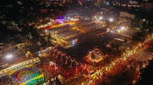
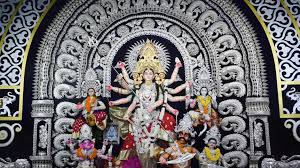

Known as the Temple City of India, Bhubaneswar’s culture is a vibrant mix of traditions, art,
architecture, and festivals. From classical dance to temple rituals, the city reflects Odisha’s glorious past
and dynamic present.
Cultural Highlights
Ancient Temples
Odissi Dance

Festivals & Celebrations
Handicrafts
Festivals of Bhubaneswar
Festivals in Bhubaneswar reflect its rich traditions, faith, and unity in diversity.
Here are some of the most famous celebrations:
Rath Yatra
The grand chariot festival of Lord Jagannath celebrated with massive devotion.

Durga Puja
Durga Puja in Bhubaneswar showcases vibrant pandals, lights, and cultural shows.
Makar Sankranti
Harvest festival celebrated with kite flying, feasts, and community gatherings.
Konark Dance Festival
Classical dance festival held at the Sun Temple showcasing Odisha’s heritage.